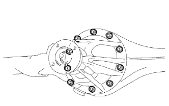
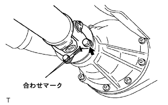

Differential carrier ASSY RR (4WD) Installation |
| 1. Installation of rear dialogue carrier gasket |
Use white gasoline to remove garbage and fats on the bonding surface of the rear axle housing assembly with the rear dialogue career Assembly.
Apply a seal packing 1281 on both sides of the new rear dialogue carrier gasket, and attach a rear dial -housing carrier gasket to the rear axle housing Assembly.
| 2. Differential carrier ASSY RR installation |
Put a differential career ASSY on the jack, jack up, and attach it to the rear axle housing ASSY.
|  |
Apply adheriv 1344 to the screw of the mounting bolt and attach a differential career ASSY with 10 nuts and spring washer.
| 3. Proposhaft ASSY RR installation |
 |
Combine the combined mark of the interimide shaft asser and propeller shaft ASSY RR, and install the interimi -shaft ASSY with four bolts, washer and nuts each.
|  |
Combine the combined mark of the propeller shaft asser rr and a differential flange, and attach the propellashaft Assemia RR with four bolts, washer and nuts each.
| 4. Lear Axle Housing End Gasket Installation (LH side) |
Use white gasoline to clean the backing plate and axle housing.
 |
Round the backing plate and attach the end gasket.
Set 4 bolts.
| 5. Learn axle housing end gasket installation (RH side) |
| 6. Installation of rear axle shaft (LH side) |
 |
Put the protrusion of the bearing retainer OUT downward, use SST, and insert the axle shaft into the axle housing.
 |
With 4 nuts, attach the bearing retainer OUT to the backing plate.
| 7. Installation of rear axle shaft (RH side) |
| 8. |
| 9. |
| 10. Parking brake shewstrat set LH installation |
 |
Use SST to attach a strat set.
| 11. Parking brake shustrat set RH installation |
| 12. Rear axle swing and axial rattling inspection |
Remove the rear tire
Remove the rear brake drum
Rear Axle Hub Hub Bearing Axial Ruts Inspection
 |
The dial gauge is set in the position of the rear axle hub, and the rattling direction of the rear axle hub bearing is inspected.
Rear axle hub swing inspection
 |
Set the dial gauge in the position of the rear axle hub to check the swing of the rear axle hub.
Rear brake drum installation
Rear tire installation
| 13. Lear brake drum installation (LH side) |
Attach the rear brake drum.
| 14. Lear brake drum installation (RH side) |
| 15. Adjustment of brake drums and lining gaps |
 |
Turn the adjuster with a flathead screwdriver from the backing plate service hall, and let the brake shoe ASSY contact the rear brake drum.
 |
Turn the adjuster by turning the adjuster with another flathead screwdriver while pressing the rear brake automatic adjust lever LH with a flathead screwdriver.
The brake shoe Assy is no longer in contact with the rear brake drum, and the adjuster is further reduced to contract to contract.
| 16. Speed sensor RR LH installation |
Attach the speed sensor RR LH with bolts.
| 17. Speed sensor RR RH installation |
| 18. Differential oil replenishment |
Remove the rear axle housing film plug and gasket.
 |
Check that there is oil within 0-5 mm from the hole end of the rear axle housing fila plug.
If the amount of oil is small, replenish the oil after checking the oil leak.
Tighten the rear axle housing fila plug via a new gasket.
| 19. Differential oil inspection / adjustment |
Remove the rear axle housing film plug and gasket.
|
Check that there is oil within 0-5 mm from the hole end of the rear axle housing fila plug.
If the amount of oil is small, replenish the oil after checking the oil leak.
Tighten the rear axle housing fila plug via a new gasket.
| 20. Lear tire installation |
| 21. |
| 22. Test mode inspection (speed sensor system) |
reference